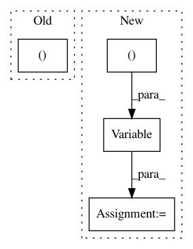

26de350ba308d7bb88d06ee9a317e36a157e7e4c,onmt/Models.py,RNNDecoderState,__init__,#RNNDecoderState#Any#Any#Any#,465
Before Change
self.hidden = rnnstate
self.input_feed = input_feed
self.coverage = coverage
self.all = self.hidden + (self.input_feed,)
def init_input_feed(self, context, hidden_size):
batch_size = context.size(1)
h_size = (batch_size, hidden_size)
After Change
// Init the input feed.
batch_size = context.size(1)
h_size = (batch_size, hidden_size)
self.input_feed = Variable(context.data.new(*h_size).zero_(),
requires_grad=False).unsqueeze(0)
@property
def _all(self):
return self.hidden + (self.input_feed,)
In pattern: SUPERPATTERN
Frequency: 4
Non-data size: 4
Instances
Project Name: OpenNMT/OpenNMT-py
Commit Name: 26de350ba308d7bb88d06ee9a317e36a157e7e4c
Time: 2017-09-10
Author: nasa4836@gmail.com
File Name: onmt/Models.py
Class Name: RNNDecoderState
Method Name: __init__
Project Name: OpenNMT/OpenNMT-py
Commit Name: 3bc7e38ed98f3b7a13fcee2726ec38b27e5c4e1b
Time: 2017-06-23
Author: srush@sum1gpu02.rc.fas.harvard.edu
File Name: onmt/Models.py
Class Name: Encoder
Method Name: _embed
Project Name: OpenNMT/OpenNMT-py
Commit Name: a7a5cdc598afd6afa3d0e9d355360bebc4947c29
Time: 2017-01-24
Author: bryan.mccann.is@gmail.com
File Name: snli/model.py
Class Name: Encoder
Method Name: forward
Project Name: chainer/chainercv
Commit Name: bf5d28aba755d056f13a901e24032a5cd9b3c20f
Time: 2017-05-28
Author: Hakuyume@users.noreply.github.com
File Name: chainercv/links/model/ssd/multibox_loss.py
Class Name:
Method Name: multibox_loss